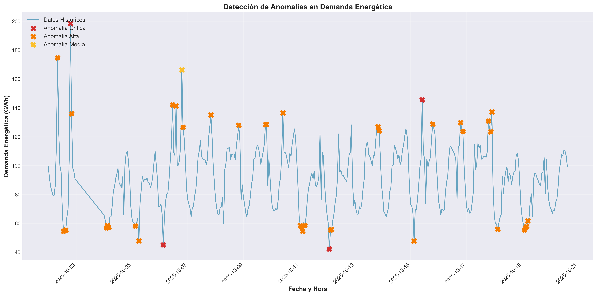
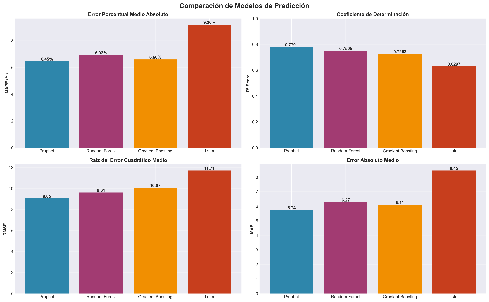

| Métrica | Histórico | Predicción | Diferencia |
|---|---|---|---|
| Promedio | 85.59 | 92.85 | 7.27 |
| Desviación Estándar | 16.27 | 18.64 | 2.36 |
| Mínimo | 55.34 | 62.85 | 7.51 |
| Máximo | 110.38 | 122.00 | 11.62 |
| 25% Percentil | 71.84 | 74.62 | 2.78 |
| 50% Percentil (Mediana) | 87.41 | 97.06 | 9.66 |
| 75% Percentil | 96.23 | 106.59 | 10.36 |
| Métrica | Histórico | Predicción | Diferencia |
|---|---|---|---|
| Promedio | 200.97 | 201.21 | 0.24 |
| Desviación Estándar | 60.95 | 14.60 | -46.35 |
| Mínimo | 75.88 | 175.87 | 99.99 |
| Máximo | 296.28 | 218.38 | -77.90 |
| 25% Percentil | 154.15 | 191.22 | 37.07 |
| 50% Percentil (Mediana) | 207.10 | 204.91 | -2.19 |
| 75% Percentil | 245.93 | 212.57 | -33.36 |
| Fecha y Hora | Demanda (GWh) | Intervalo Demanda | Tipo | Precio (€/MWh) | Intervalo Precio |
|---|---|---|---|---|---|
| 2025-10-19 16:00 | 86.14 | - | Histórico | 219.42 | - |
| 2025-10-19 17:00 | 94.87 | - | Histórico | 275.69 | - |
| 2025-10-19 18:00 | 95.30 | - | Histórico | 239.62 | - |
| 2025-10-19 19:00 | 105.52 | - | Histórico | 209.98 | - |
| 2025-10-19 20:00 | 80.73 | - | Histórico | 197.00 | - |
| 2025-10-19 21:00 | 104.05 | - | Histórico | 171.27 | - |
| 2025-10-19 22:00 | 85.84 | - | Histórico | 262.88 | - |
| 2025-10-19 23:00 | 75.92 | - | Histórico | 184.67 | - |
| 2025-10-20 00:00 | 71.67 | - | Histórico | 170.62 | - |
| 2025-10-20 01:00 | 69.70 | - | Histórico | 111.06 | - |
| 2025-10-20 02:00 | 66.87 | - | Histórico | 246.37 | - |
| 2025-10-20 03:00 | 69.23 | - | Histórico | 92.30 | - |
| 2025-10-20 04:00 | 68.91 | - | Histórico | 268.01 | - |
| 2025-10-20 05:00 | 74.72 | - | Histórico | 277.96 | - |
| 2025-10-20 06:00 | 76.62 | - | Histórico | 278.91 | - |
| 2025-10-20 07:00 | 85.10 | - | Histórico | 284.01 | - |
| 2025-10-20 08:00 | 96.23 | - | Histórico | 176.90 | - |
| 2025-10-20 09:00 | 101.45 | - | Histórico | 230.60 | - |
| 2025-10-20 10:00 | 107.52 | - | Histórico | 262.84 | - |
| 2025-10-20 11:00 | 106.71 | - | Histórico | 236.75 | - |
| 2025-10-20 12:00 | 110.38 | - | Histórico | 126.73 | - |
| 2025-10-20 13:00 | 110.00 | - | Histórico | 193.59 | - |
| 2025-10-20 14:00 | 106.71 | - | Histórico | 282.48 | - |
| 2025-10-20 15:00 | 99.38 | - | Histórico | 149.66 | - |
| 2025-10-17 03:00 | 67.92 | [53.62 - 82.67] | Predicción | 177.94 | [91.49 - 270.42] |
| 2025-10-17 04:00 | 67.35 | [52.28 - 82.49] | Predicción | 175.87 | [88.74 - 270.08] |
| 2025-10-17 05:00 | 69.43 | [54.90 - 84.28] | Predicción | 176.03 | [82.53 - 266.19] |
| 2025-10-17 06:00 | 76.14 | [61.97 - 91.51] | Predicción | 178.01 | [88.73 - 263.93] |
| 2025-10-17 07:00 | 86.72 | [71.83 - 101.49] | Predicción | 182.80 | [91.82 - 269.38] |
| 2025-10-17 08:00 | 97.83 | [83.14 - 114.34] | Predicción | 191.54 | [105.07 - 276.86] |
| 2025-10-17 09:00 | 105.88 | [90.68 - 119.96] | Predicción | 202.84 | [117.03 - 293.84] |
| 2025-10-17 10:00 | 109.28 | [94.73 - 124.04] | Predicción | 211.95 | [115.39 - 303.89] |
| 2025-10-17 11:00 | 108.73 | [94.03 - 124.54] | Predicción | 213.70 | [116.86 - 306.15] |
| 2025-10-17 12:00 | 105.75 | [91.48 - 120.65] | Predicción | 206.97 | [121.92 - 291.79] |
| 2025-10-17 13:00 | 101.46 | [87.07 - 116.50] | Predicción | 196.58 | [110.60 - 279.12] |
| 2025-10-17 14:00 | 96.85 | [82.57 - 111.21] | Predicción | 190.26 | [110.89 - 276.11] |
| 2025-10-17 15:00 | 93.81 | [79.84 - 108.64] | Predicción | 192.79 | [100.32 - 279.41] |
| 2025-10-17 16:00 | 94.98 | [79.30 - 109.45] | Predicción | 202.33 | [114.09 - 292.03] |
| 2025-10-17 17:00 | 101.82 | [87.64 - 117.75] | Predicción | 212.20 | [123.04 - 300.16] |
| 2025-10-17 18:00 | 112.32 | [96.66 - 126.22] | Predicción | 216.55 | [130.89 - 300.21] |
| 2025-10-17 19:00 | 121.02 | [105.25 - 135.03] | Predicción | 214.91 | [127.36 - 303.22] |
| 2025-10-17 20:00 | 122.00 | [106.61 - 136.51] | Predicción | 211.67 | [120.44 - 296.26] |
| 2025-10-17 21:00 | 113.02 | [98.14 - 128.23] | Predicción | 211.51 | [129.62 - 299.47] |
| 2025-10-17 22:00 | 97.27 | [82.67 - 110.48] | Predicción | 215.00 | [131.74 - 308.43] |
| 2025-10-17 23:00 | 81.21 | [66.80 - 95.52] | Predicción | 218.38 | [123.70 - 306.96] |
| 2025-10-18 00:00 | 70.05 | [55.41 - 83.26] | Predicción | 217.31 | [127.55 - 304.50] |
| 2025-10-18 01:00 | 64.80 | [50.42 - 79.81] | Predicción | 210.69 | [126.61 - 306.72] |
| 2025-10-18 02:00 | 62.85 | [48.14 - 76.70] | Predicción | 201.18 | [121.39 - 288.92] |
generar_graficos.py
Comparación de las últimas 72 horas de datos históricos con las predicciones para las próximas 48 horas.
Visualización de todas las anomalías detectadas en la serie temporal, clasificadas por severidad.
Evaluación comparativa de cuatro modelos de Machine Learning: Prophet, Random Forest, Gradient Boosting y LSTM.
Análisis estadístico de las anomalías detectadas por severidad y método de detección.
Vista panorámica que integra datos históricos, predicciones futuras y todas las anomalías detectadas.
Generado por Motor de Analítica Avanzada - GreenEnergy Insights
Fecha de generación: 2025-10-03 10:59:55